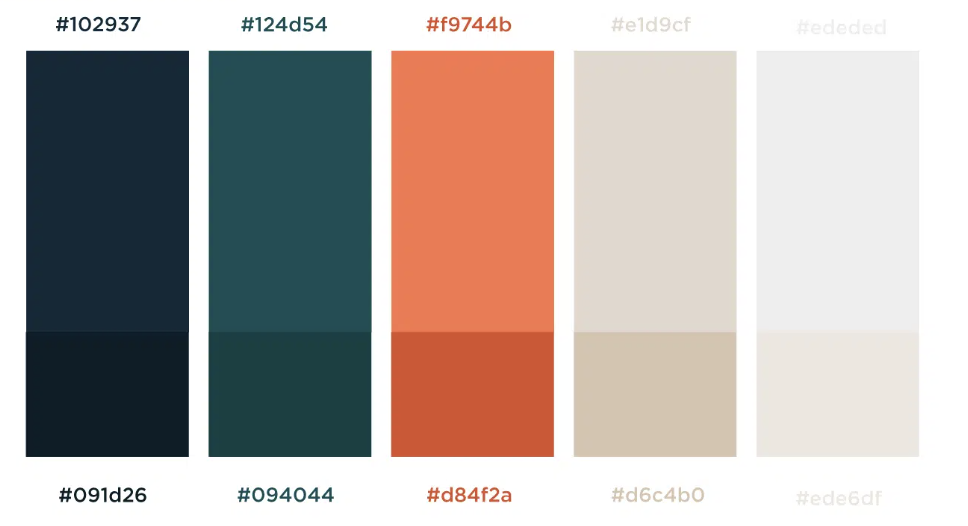
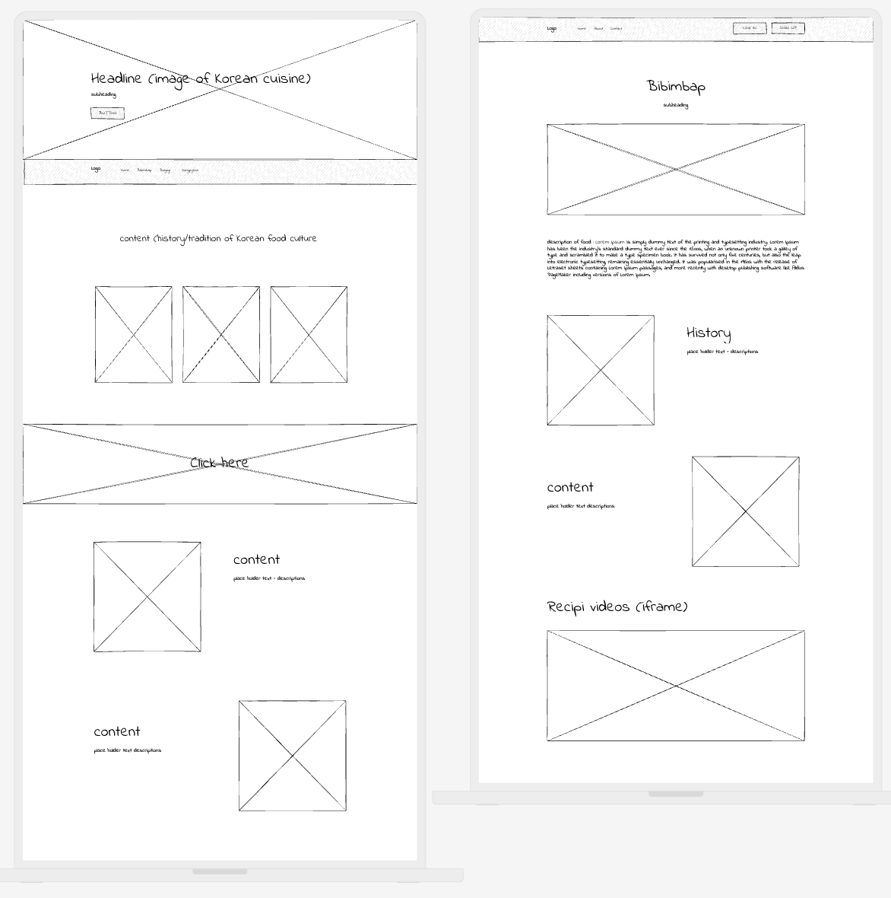

Final Project Proposal: Korean Traditional Cuisine
Project Brief
The final project aims to create a blog dedicated to introducing renowned Korean traditional cuisines . The blog will serve as a platform to educate and engage readers with information on the history, ingredients, and recipes of each featured dish.
The target audience includes individuals with genuine interest in Korean cuisine or culture. This blog aims to present information in an easy and engaging way including those those who are not already familiar with Korean food or culture.
Design
- Use a clean design with a vibrant color palette that reflects the richness and diversity of Korean cuisine and culture
- Minimal and simple website structure and design for easy reading
- Accent colors: Green, orange, navy blue

Scope
- Homepage/Landing Page : Brief history about Korean food culture
- three subpages for each cuisine that I will introduce - Bibimbap, Bulgogi, Songpyeon
- The subpage will be single page style/scroll down with respective content for the cuisine
- subpage sections: History, Recipi, Recommended restuarants to get them in Seoul
- Wireframe:

Inspirations
More references